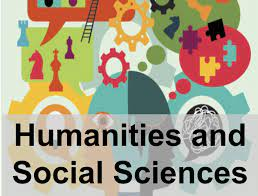
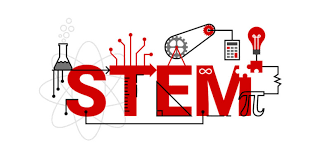
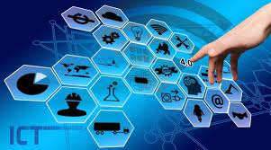
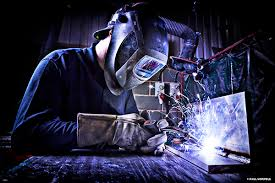

Back To Home :)

(ABM)Accountancy, Business, and Management
The Accountancy, Business, and Management Strand—or ABM strand—seeks
to prepare the young business leaders of tomorrow. ABM strand paves the way
for business-related college degrees. It teaches the basic concepts of financial
management, accounting, and corporate operations. The programs under this
strand aims to instill crucial skills that one needs to perform well in their future careers and businesses.

Humanities and Social Sciences (HUMSS)
Humanities and Social Sciences is a strand offered to senior high school students under the Academics track.
The HUMSS Senior High School strand is designed for students who intend to take up journalism,communication arts,
liberal arts, education, and other social-science related courses in college. Because these courses revolve heavily around
interacting with other people, the Senior High School HUMSS strand is all about improving students’ reading, writing, and speaking skills.
A common misconception about the Senior High School HUMSS strand is that it is a lot easier than other tracks and strands or that students who take this strand do not need to study as hard as compared to the other strands (especially those in the Academic track). While HUMSS does not involve as much Math and computation as tracks like ABM or STEM, it is by no means “easier.”twining disciplines (Science, Technology, Engineering, and Mathematics) to see how they work in real life. The STEM strand:

Science, Technology, Engineering, and Mathematics strand. (STEM)
The STEM strand gives senior high school students exposure to the intertwining disciplines (Science, Technology, Engineering, and Mathematics) to see how they work in real life. The STEM strand:
Builds resilience in a safe environment by allowing students to experiment and to naturally experience failures as part of the learning process
Encourages teamwork so students can find solutions to problems, record data, write reports, give presentations, and more
Teaches kids about the power and importance of technology, especially in today’s digital age
Fosters a habit of adaption when things don’t go as planned

Technical-Vocational-Livelihood track.(TVL)
TVL Strand is designed to develop students' skills that is useful for livelihood and technical projects.
It provides a curriculum that is a combination of Core Courses and specialized hands-on courses that meets
the competency-based assessment of TESDA.

Information and Communication Technology.(ICT)
ICT is a Senior High School strand that prepares you for a career in Information and Communication Technology.
It equips you with advanced skills in computer systems, programming, creating web pages, and basic animation.
What you will gain from the ICT Strand: Learn about programming, animation or illustration.

Home Economics {HE)
The Home Economics offers various specializations that can lead to livelihood projects at home.
This strand aims to give you job-ready skills that can help you in finding the right employment.
Shielded Metal Arc Welding (SMAW)
The Shielded Metal Arc Welding (SMAW) Technical Diploma program provides
a solid foundation in process-specific production welding technology.
The purpose of SMAW (also known as stick welding) is to perform arc welding using a covered metal electrode to shield the weld.
